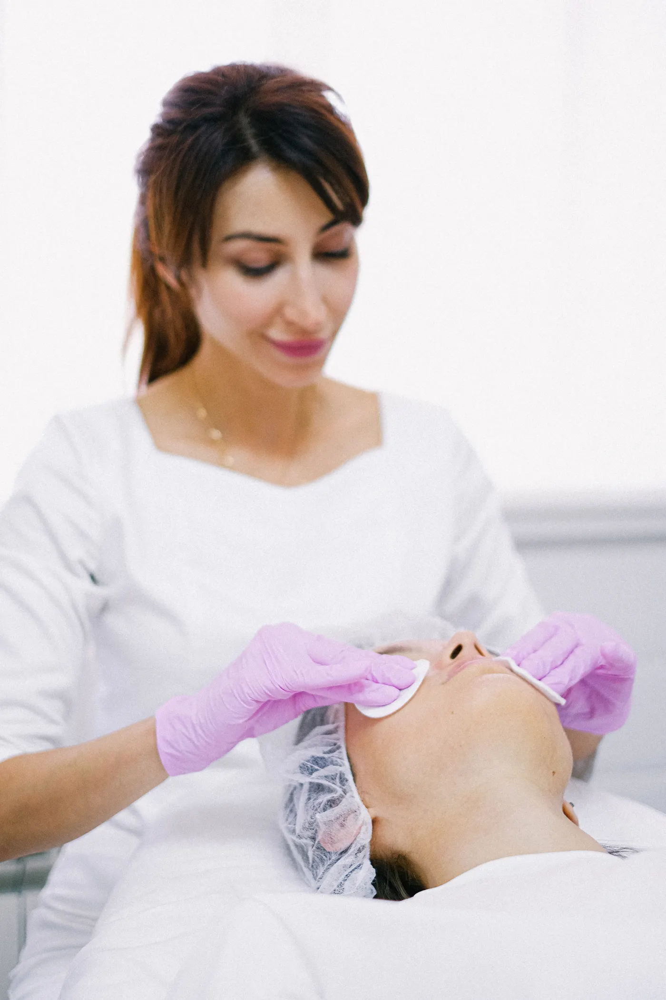

Megereszkedett, rugalmatlan bőr
A kollagén- és elasztintermelés csökkenésével a bőröd feszessége romlik, az arcod kontúrjai elmosódnak, és a ráncok egyre mélyebbé válnak.
A bőröd egyedi, ezért a kezeléseidnek is annak kell lennie. Legyen szó ráncok halványításáról, feszesítésről vagy aknékezelésről, a legmodernebb technológiákkal és célzott hatóanyagokkal dolgozom, hogy bőröd természetesen megújuljon és hosszú távon ragyogó maradjon.

Észrevetted, hogy a bőröd már nem olyan, mint régen? Az évek nyomot hagynak, és bár a lelked fiatal marad, a bőröd másképp mesél a múltról. A vonások átalakulnak, a bőröd elveszíti korábbi ragyogását, a ráncok mélyülnek, és a makacs bőrproblémák, mint az akné vagy a gyulladások, egyre nehezebben múlnak el. Ha nem teszel időben a változások ellen, a folyamat csak gyorsul. A kezeletlen problémák egyre hangsúlyosabbá válnak, a bőr regenerációja lassul, és a komfortérzeted is csökken. Az idő nem áll meg, de a megfelelő kezelésekkel visszafordíthatod a látható jeleket.
A kollagén- és elasztintermelés csökkenésével a bőröd feszessége romlik, az arcod kontúrjai elmosódnak, és a ráncok egyre mélyebbé válnak.
A kezeletlen pattanások és gyulladások nyomot hagyhatnak, amelyek idővel mély hegekké alakulnak, megnehezítve a bőröd simaságának visszaállítását.
A hidratáció hiánya, az UV-sugárzás és a hormonális változások miatt a bőr egyenetlenné válik, elveszítheti természetes ragyogását, és egyre több pigmentfolt jelenik meg.
A bőr védőrétegének meggyengülése miatt könnyebben kipirosodik, viszket vagy gyulladásra hajlamos, és nehezebben regenerálódik.
A kezelés kiválasztásánál mindig a bőröd aktuális állapotából indulunk ki.

Az egészséges, sejtszintű bőrmegújulást az értékes növényi összetevők mellett aktív és szállító hatóanyagok (többrétegű liposzómák, nanoszómák, ceramidok, foszfolipidek stb.) biztosítják. A látványos és gyors bőrfiatalítást a kozmetikai ipar leginnovatívabb bőrbarát hatóanyagai, kimondottan magas koncentrációban teszik lehetővé.
Azonnali ráncsimító hatás, azonnali látvány, plasztikai beavatkozások nélkül! A tudomány mára már bebizonyította, hogy a kozmetikai peptidek jelentős szerepet játszanak a különböző bőrproblémák kezelésében. Néhány vizsgálat szerint a kozmetikai peptidek képesek eltüntetni az öregedés jeleit.

Nálam mindent megtalálsz, ami teljes szépülésedhez, pihenésedhez szükséges. Minden kezelésem személyre szabott, mely során figyelembe veszem bőröd aktuális igényét, állapotát.
Hiszek abban, hogy a megfelelő kezelés látványos változást hoz. Ezért 5 alkalmas kúrák esetén elégedettségi garanciát vállalok: ha a bőröd nem mutat javulást, a kezelés árának 50%-át visszatérítem.
A bőrápolás hosszú távú befektetés önmagadba. Egy jól felépített, komplex kezeléssorozat nemcsak látványos eredményt mutat, hanem bőröd egészségét is támogatja. Válaszd ki a számodra legmegfelelőbb csomagot, és tapasztald meg, milyen érzés, amikor a bőröd valóban hálás a törődésért.
79 000 Ft
Feszesebb, simább, üdébb bőr – kíméletes, mégis hatékony bőrfiatalítás célzott kezelésekkel.
99 000 Ft
Intenzív bőrmegújítás, amely láthatóan csökkenti a ráncokat és visszaadja a bőr rugalmasságát.
59 000 Ft
Hatékony megoldás a makacs pattanások ellen, hogy bőröd tiszta, egészséges és ragyogó legyen.
Előre egyeztetett időpontban, hétfőtől péntekig 9:00 és 16:00 között fogadlak. Telefonon vagy az űrlapon keresztül tudsz bejelentkezni.
Felmérjük a bőröd állapotát és arcápolási szokásaidat. Ezek alapján összeállítom a számodra legmegfelelőbb kezelési tervet.
A személyre szabott kezelést minden esetben egy relaxáló arcmasszázs egészíti ki, hogy a bőröd felfrissüljön.
Segítek kialakítani az otthoni bőrápolási rutinodat, személyre szabott termékajánlásokkal és praktikus tanácsokkal.
A minőség mércéje: a visszatérő vendégek.

„Korábbi rossz tapasztalatok miatt sokáig nem mertem kozmetikushoz járni, de ez az itt töltött első alkalmat követően megváltozott. A bőröm minden kezelés után szinte ragyog, remekül érzem magam, és Eliza segítségével sikerült kialakítanom a helyes, bőrtípusomnak megfelelő arcápolási rutint. Szívből ajánlom!”

„Eliza nagyon kedves, csupaszív kozmetikus, a kozmetika csodaszép, tiszta, hangulatos, mindig örömmel járok ide vissza. Legutóbb a 10 alkalmas arcfiatalító kezelést vettem igénybe, és az eredmény magáért beszél, azóta több pozitív visszajelzést is kaptam ismerőseimtől. Csak ajánlani tudom Elizát!”
A portrék stock illusztrációk.
Kérdésed van a kezelésekről, vagy időpontot szeretnél egyeztetni? Keress bizalommal, és segítek megtalálni a számodra legjobb megoldást!
A tananyagban megadott minta-elérhetőségek.